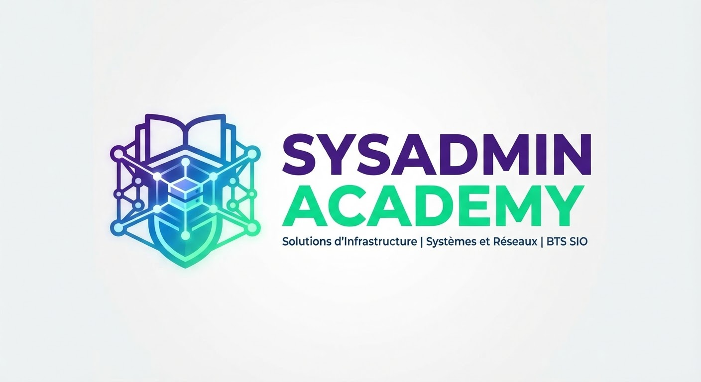

SysAdmin Academy
Mes fiches mémo de BTS SIO · option SISR · 2e année
$ sudo apt install reussite-bts
🖥️🗄️
🛡️ SISR
Solutions d’Infrastructure, Systèmes et Réseaux
🐧Les commandes essentielles sous Linux (Debian / Ubuntu)Ouvrir le PDF
✍️Les commandes essentielles sous VimOuvrir le PDF
📜Les scripts BashOuvrir le PDF
📡DHCP et agent relais DHCPOuvrir le PDF
🪵Rsyslog, journalisation et RainerScriptOuvrir le PDF
⚡PowerShellOuvrir le PDF
🔐RADIUS : authentification AAA et 802.1XOuvrir le PDF
🎫GLPI : gestion de parc et helpdeskOuvrir le PDF
💾RANCID : sauvegarde des configurations réseauOuvrir le PDF
⚖️ CEJM
Culture économique, juridique et managériale
🎯Comprendre les consignes : les verbes directeursOuvrir le PDF
⚖️Résoudre un cas pratique : le syllogisme juridiqueOuvrir le PDF
🏛️Analyser une décision de justiceOuvrir le PDF
📝Lire et analyser un contratOuvrir le PDF
🤝La formation du contratOuvrir le PDF
🛒Le contrat de vente électroniqueOuvrir le PDF
🌍La matrice PESTEL : analyser l’environnement de l’entrepriseOuvrir le PDF
📈Analyser un marchéOuvrir le PDF
🧮 Maths pour l’informatique
Logique, binaire, algèbre de Boole…
📐 Maths approfondies
Pour aller plus loin